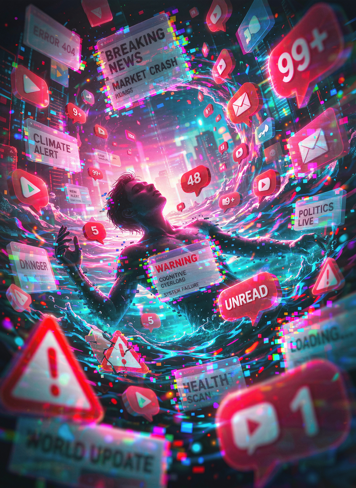

Phase I: Algorithmic Inundation
Information Overload & Cognitive Exhaustion
Emit Personal Curation Signals to Algorithm:
An Interactive Exhibition on Algorithmic Inundation and Personal Curation

Emit Personal Curation Signals to Algorithm: